Code
A pull request.
ticketConsole: limit the Done column
Its own branch, on a disposable worktree; the tests run. Merged when you validate.
A harness around Claude Code that runs your tasks on your machine — code, writing, actions, posts.
Write the ticket on Ponos’s own board — the console. He brings back a pull request, a text, an action carried out or a post ready to go. You answer in a word, even from your phone, and nothing ships until you say yes.
curl -LsSf https://the-ponos.app/install | sh
Two of them are yours, and each takes a few seconds. The two in between are Ponos’s.
What you would tell a colleague, on your board — then you move it to Ready. A ticket nobody typed is classified first, and a doubt sends it back to you.
While you do something else, on your machine: a pull request on its own disposable worktree, a text written into the ticket, an action carried out.
The result reaches you — in the console, or on your phone, where oui is a whole answer. Nothing ships until you press Validate. Run again, with a note, and he picks it up. What protects your code →
The pull request is merged, the post is published — and only then is it Done. Changed your mind? Cancelled files it away.
Of the 716 pull requests in Ponos’s repository, 663 were opened by Ponos, from tickets on its own board — this page included. A developer writes the tickets and says yes; the releases are cut the same way.
Counted on 23 November 2026. The pull requests, on GitHub → · A Hermez product, hermez.dev
The ticket’s type decides the road — pick it, or let a small model read the ticket and choose.
Its own branch, on a disposable worktree; the tests run. Merged when you validate.
Release notes, a brief, a summary: written into the ticket, ready to copy. No repository needed.
In the browser or a service’s settings, with every change logged — before, after, what was checked. It stops at its first doubt.
A post, a site put online, a message sent: prepared and shown to you first. Published once you say yes.
Create a ticket for the SQLite migration and make it ready
— the console’s chat is a Claude Code session in your workspace, and it does it.
A name and a brief. Give it a GitHub link and the repository is cloned the first time a ticket needs it; give it none and its tickets come back as text.
Ten at a time, for the workspace or one project, each with a relevance score out of 100. Keep one, throw one away for good, or turn it into a ticket in a click.
The ideas →A criterion and a due date; the tickets tied to it count toward it — “3 of 7 tickets done”, Late once its day is past.
The goals →[vault] reads tokens where they already live — the environment, the keyring, pass, Bitwarden — and hands each project only its own, masked wherever they are printed.
Every Monday, review the dependencies
— a schedule writes the ticket and moves it to Ready on its own, laid out in a calendar. A machine off for a week wakes up to one, not seven.
Ponos needs nobody else’s board. The console, on 127.0.0.1, is where you write a ticket, drag it to Ready and watch its session live; the tickets are in ponos.db, on your machine.
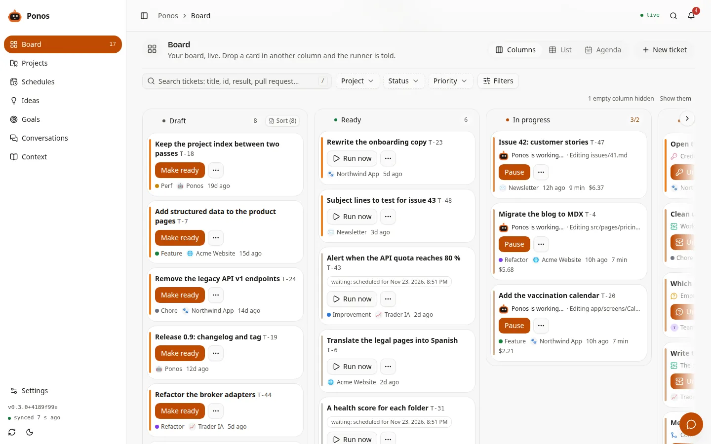
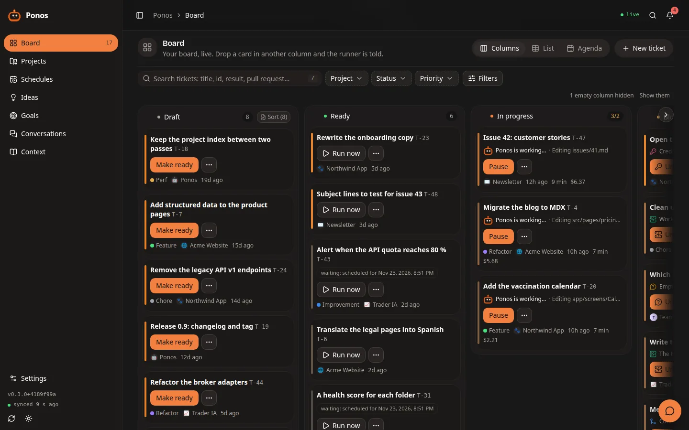
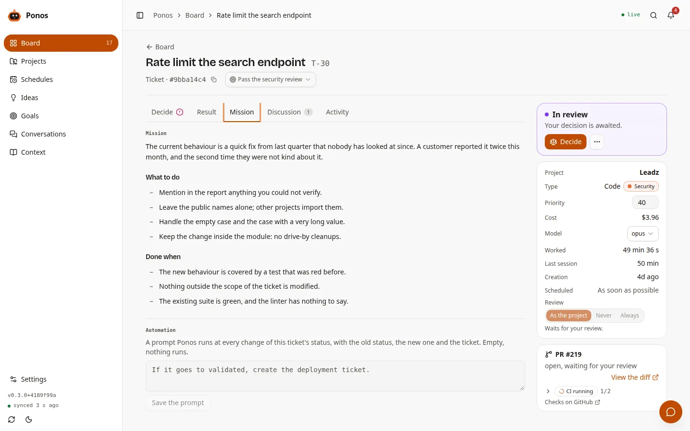
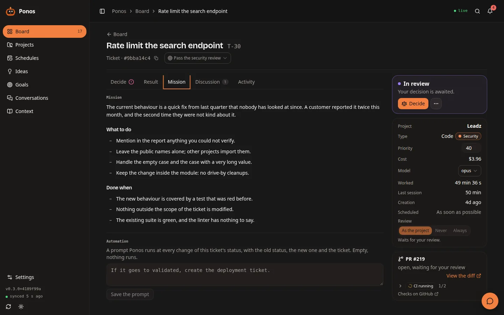
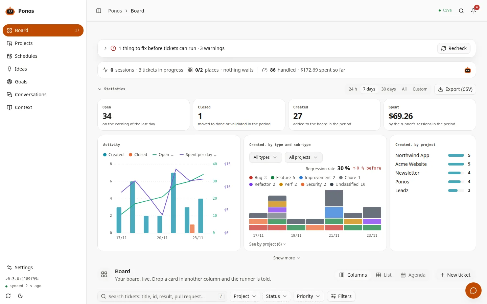
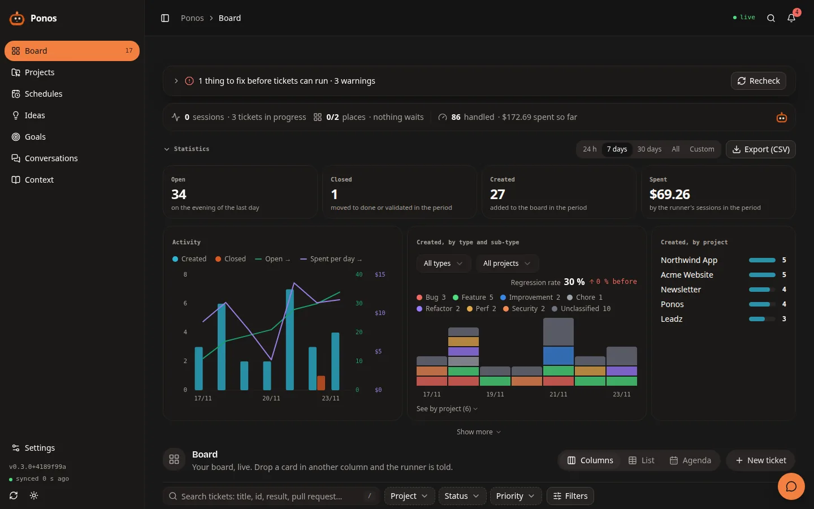
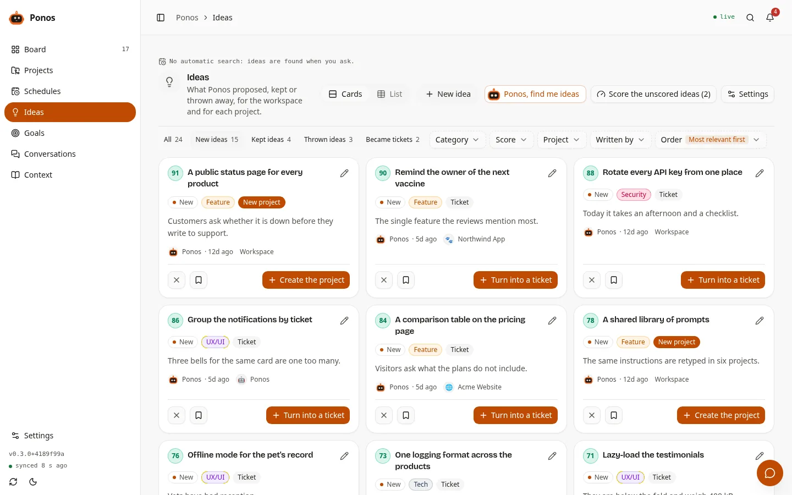
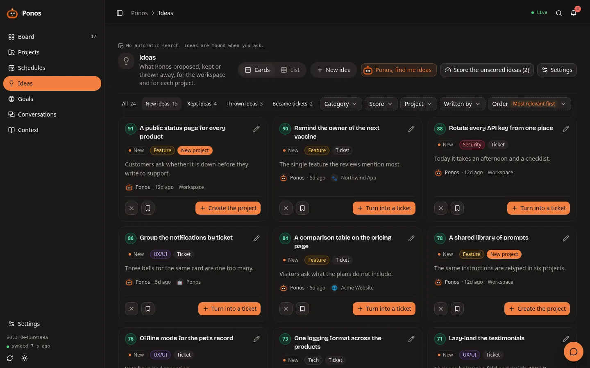
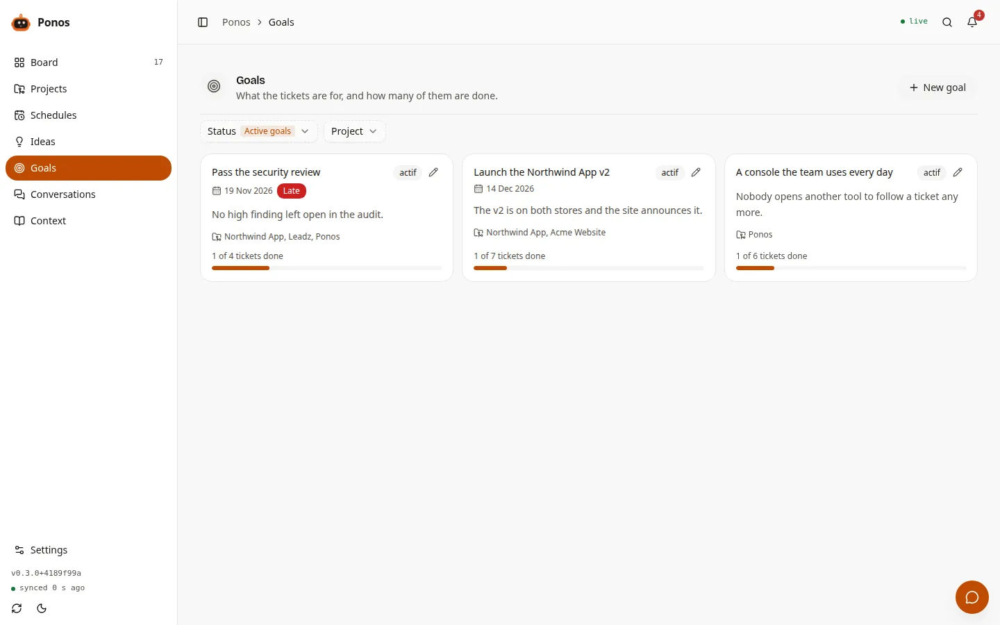
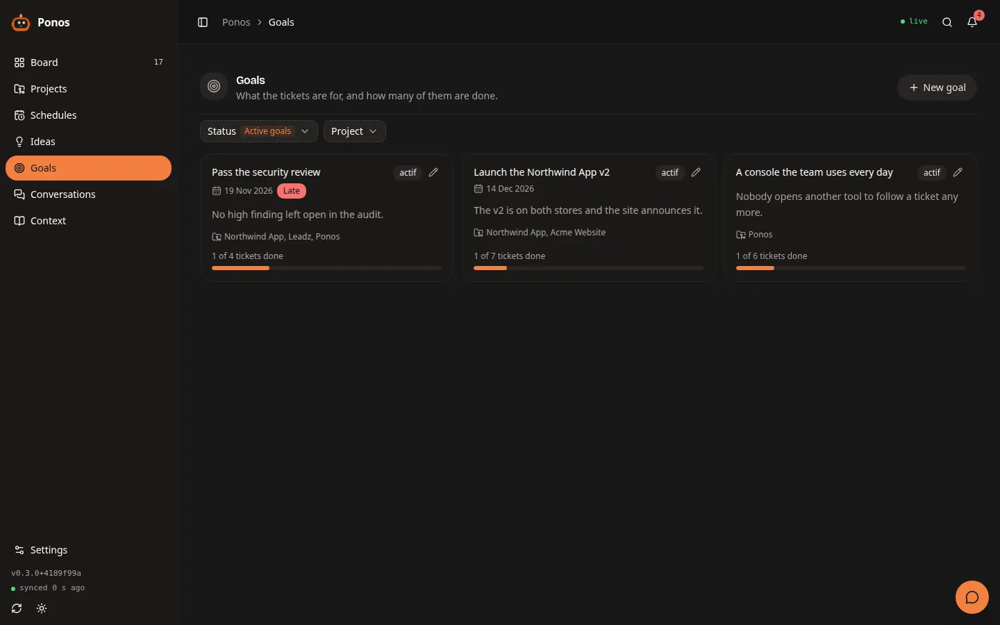
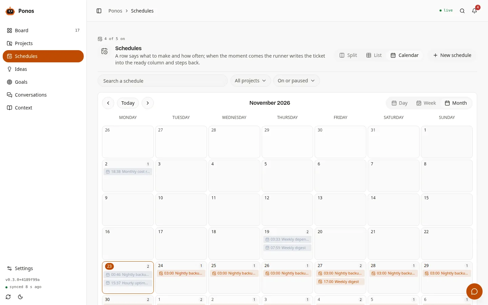
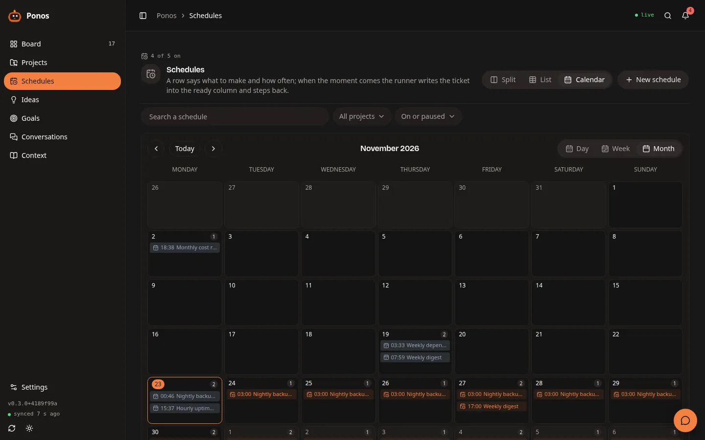
ponos service run — the installer already starts it. Everything it does →Ponos needs Claude Code and nothing else. Each of these is one more token in the settings, and none of them is a requirement.
A code ticket comes back as a pull request, merged on your yes. Connect GitHub in one click from the console — Ponos creates its own GitHub App, you pick the repositories — or keep gh. Writing, actions and posts need none of it.
A question or a result reaches your phone, and your answer — oui will do — lands on the ticket.
Telegram and Slack →Every other model, with one key: a GPT writes the copy, a model transcribes a voice note — or the sessions themselves run on the model you name.
Every other model →Your tasks and what is waiting for you, from a conversation. In claude.ai or Claude Desktop, Settings › Connectors › Add custom connector with your console’s address and /mcp, then Connect — no token to copy. In Claude Code, one line, then /mcp, Authenticate:
$ claude mcp add --transport http ponos http://127.0.0.1:8787/mcp
Every tool →
It checks what your machine has, says what is missing and how to install it, starts Ponos and opens its console in your browser. Everything after that happens there.
curl -LsSf https://the-ponos.app/install | sh
The short address fetches install.sh from the repository and runs it — read it first if you like.
On http://127.0.0.1:8787, a first connection in steps, each checked for real before the next: the language, your password, who answers the sessions, GitHub in one click, a first project, and a demonstration ticket played there and then to prove it all works.
ponos daemon runs in the background without systemd;python3 ≥ 3.11, and network access to PyPI while it installs its dependencies into an environment of its own;git and Claude Code, which the installer offers to install. gh is optional.
Ponos is in Dokploy’s template catalogue: HTTPS on a domain of its own, and your data on named volumes.
CLAUDE_CODE_OAUTH_TOKEN from claude setup-token, or ANTHROPIC_API_KEY.PONOS_WEB_EMAIL and PONOS_WEB_PASSWORD.Ponos in the Dokploy catalogue → · Every variable, and the import without the catalogue →
http://127.0.0.1:8787 yourself; if nothing answers, ponos service run starts it and says why it cannot.ponos doctor in a terminal — checks everything, and is the text to paste when asking for help.The three steps are above. The image carries everything a ticket needs — Claude Code, git, gh, Node —, pinned to the release the template was published with, and runs as a user of its own, never root. Four named volumes keep the configuration and the board, the clones, and the sign-ins of Claude Code and gh; a healthcheck asks /healthz; memory is capped at 4 GB.
CLAUDE_CODE_OAUTH_TOKEN (your subscription) or ANTHROPIC_API_KEY.OPENROUTER_API_KEY for every other model; GH_TOKEN for the pull requests — or a GitHub App, created from the console; PONOS_TELEGRAM_TOKEN and PONOS_SLACK_TOKEN for your phone.PONOS_WEB_EMAIL, PONOS_WEB_PASSWORD and PONOS_WEB_TOKEN; PONOS_LANGUAGE, en or fr; TZ, the zone a schedule’s hours are read in.A Dokploy without Ponos in its catalogue imports it: a Compose service, Advanced › Import, and the Base64 the documentation prints.
With Tailscale: a private network between your own devices, free for personal use. No port opened on the Internet.
$ curl -fsSL https://tailscale.com/install.sh | sh $ sudo tailscale up
127.0.0.1:8787 only — on purpose, since it starts sessions that run code — so the machine’s 100.x address will not reach it. Tailscale relays to it instead, over HTTPS:
$ sudo tailscale serve --bg 8787
It prints the address, https://<machine>.<tailnet>.ts.net. The first time, it may ask you to enable HTTPS for your tailnet.
ponos config), or Settings › Public address in the console:
# [web]
url = "https://<machine>.<tailnet>.ts.net"
The console answers that name, and that one only; without it, a 421. No restart needed.
ponos service run --print-token).Never tailscale funnel. Funnel puts the console on the public Internet, and behind it sits a runner that runs code on your machine. Stay on your tailnet.